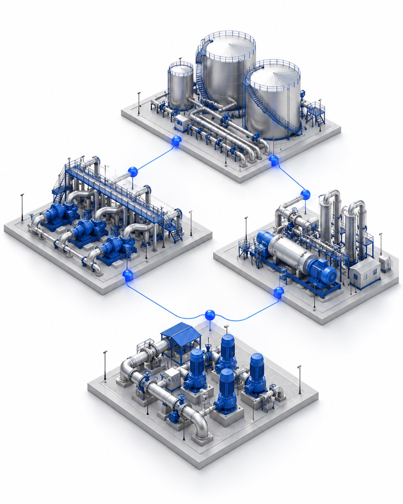
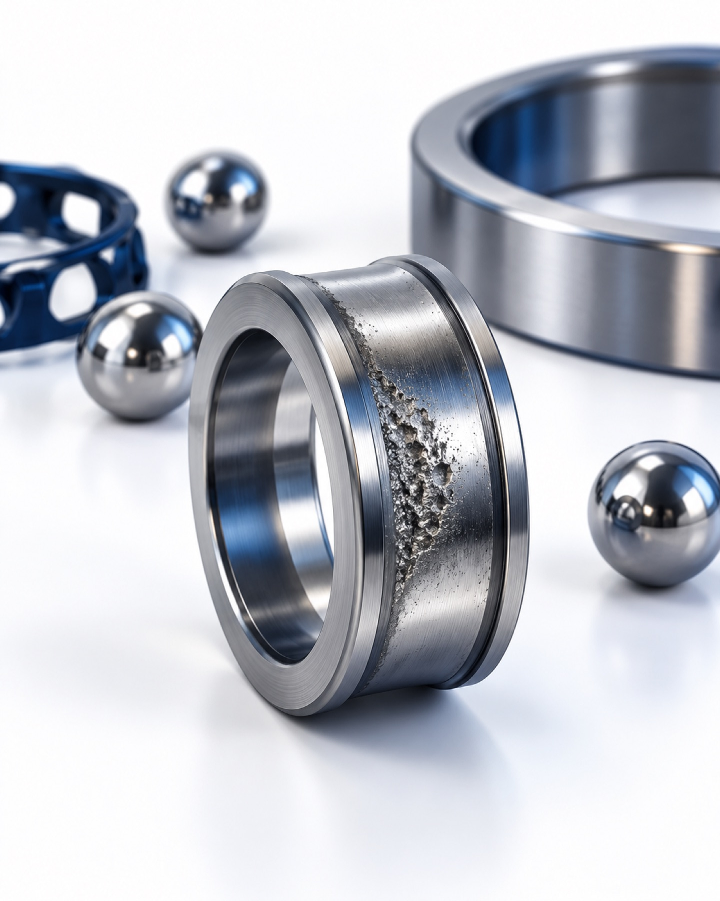
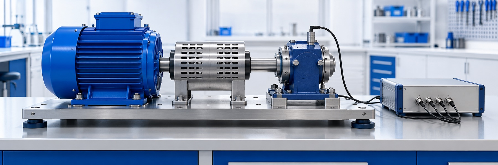

Five plants. One shared model. No raw data moved.

Average plant accuracy, alone vs. together.

Projection · 50 sensors/plant · 12 kHz · 1 round/day. Not measured.
Not independent machines.
Not natural wear.
No warning-time or downtime claims.
No secure aggregation or DP.
